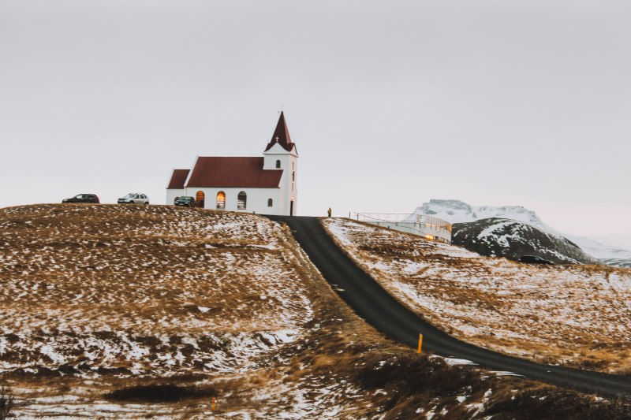
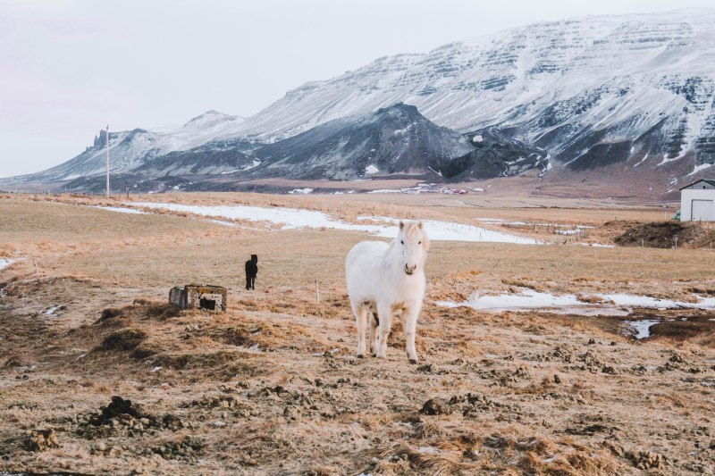

LAMTHANH
“Một ngôi nhà nho nhỏ ở Hà Nội để sống và làm việc, một ngôi nhà thứ 2 ở Đà Lạt để ta đi trốn.”
"Jodhpur là một trong những thành phố mê hoặc nhất của Rajasthan, với pháo đài Mehrangarh hùng vĩ nhìn ra thành phố".
"Đừng chỉ đi đến Porto, hãy để trái tim mình ở lại Porto."
Không có nhiều thành phố nào kỳ lạ như Istanbul, chia đôi thân mình thành hai phần san sẻ cho hai Châu lục. Istanbul là cửa ngõ vào Châu Âu và cũng là cửa ngõ về phía cực Đông của Châu Á. Thế nên thành phố này pha trộn những gì tuyệt đẹp nhất của hai nền văn hoá và tạo nên một vẻ đẹp Thổ Nhĩ Kỳ cho riêng mình.

Jadin Do Morro

Livraria Lello

Potor
Jodhpur
Helsinki
Takayama
Taipei

Ga Dann Park
Spice Bazar
Chúng ta, ai rồi cũng sẽ lạc, trên những chuyến đi, trên những con đường đời muôn lối. Nhưng hãy cứ lạc đi vì biết đâu trên những lần lạc đó sẽ đưa bạn đến những đích đến mà bạn chẳng hề ngờ tới, không chắc chắn sẽ hoàn toàn đẹp đẽ, nhưng quan trọng là trên hành trình đó bạn học được đủ nhiều.
Dấn bước chân vào Châu Phi tại Morocco,mới chợt thấy rằng thế giới hãy còn rộng lắm, và còn nhiều dấu chấm thang ngoài kia đang chờ đợi.

Warsaw is not a big old city with a long historical monuments due to destruction by wars, the city’s old town, which is a replica to the original, is only 40 years old. But it doesn’t prevent Warsaw from standing out from other European cities. This city is filled with harmonization between modernity and history within a few steps.

Atlantis Books có thể không to, có thể không đẹp nhưng nơi này có những câu chuyện kể hoài không hết.Hiệu sách là một thế giới khác giữa lòng ngôi làng Oia xinh đẹp, nơi có thể trốn khỏi dòng khách du lịch đổ về đây và khiến bạn có thêm một lý do để yêu thêm hòn đảo Hy Lạp này.
Nhờ vào lịch sử kéo dài và sự bảo tồn khéo léo, Amsterdam quyến rũ những người đến thăm bằng những câu chuyện tuyệt vời, và nơi bạn có thể nghe hay đọc chúng là những bảo tàng trong thành phố. Rijkmuseum là nơi lột tả được góc nhìn của người dân.
Và bạn sẽ không khỏi bồi hồi khi chợt thấy Ronda nằm vắt mình trên vách núi, phía chân núi những đoá hoa hạnh nhân đang nở rộ trên thảm thực vật xanh rì, một cảnh tượng ngoạn mục.
Tuổi trẻ đôi khi chỉ là cuốn phim quay nhanh của một giai đoạn cuộc đời, khiến ta cứ ngõ rằng đó là thời gian đẹp nhất, nhưng tuổi trẻ là khita còn sức khỏe, còn lửa cháy trong người và còn minh mẫn để nhớ, nên mới có thể gọi là thời gian đẹp nhất.